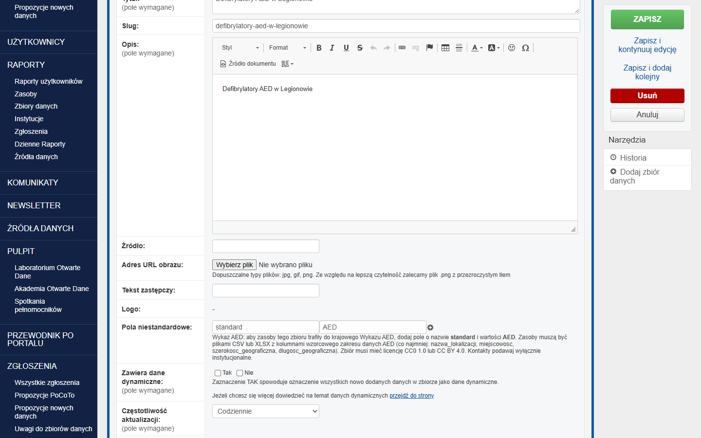
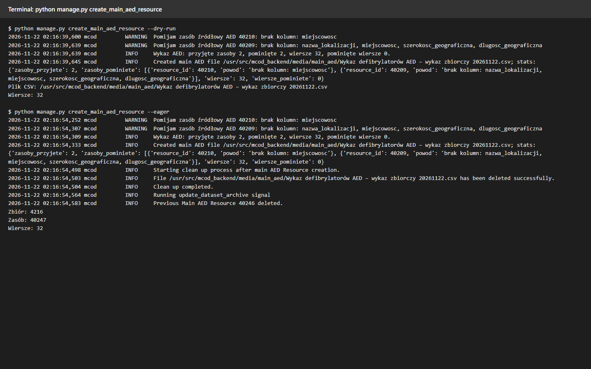
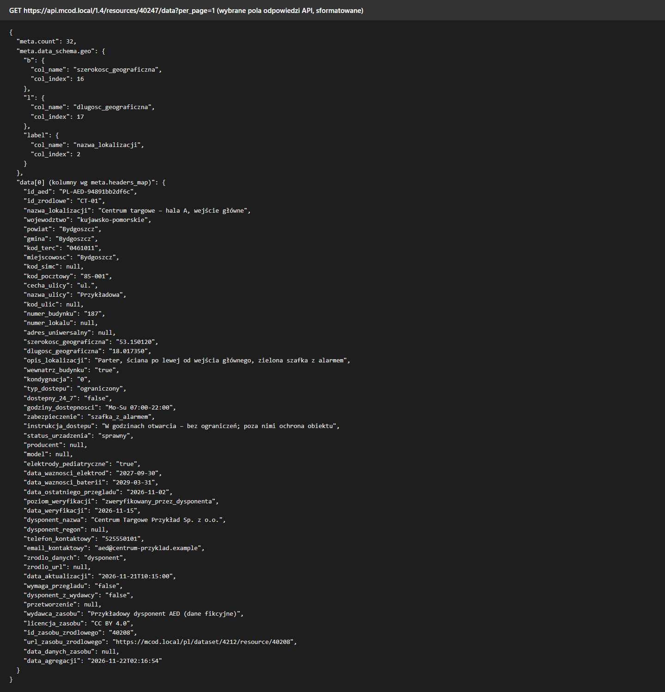

1Dane o AED są rozproszone i każdy publikuje je inaczej
Na dane.gov.pl jest kilka zbiorów o defibrylatorach AED. Każdy ma inny układ kolumn, format i drogę do portalu, a ogólnopolskiego zestawienia nie ma.
| Zbiór | Jak trafia do portalu | Co to znaczy dla wykazu |
|---|---|---|
| Krosno | plik CSV w portalu, CC0 1.0 | czyta się wprost, ale brakuje kolumny miejscowości |
| Przemyśl | link do systemu miasta, 5 dystrybucji (CSV, GeoJSON, JSON, 2×GML) | tylko CSV daje tabelę; bez wyboru jednego zasobu powstałyby duplikaty |
| Marki | plik CSV i XLSX, CC BY 4.0 | oba wadliwe: cały wiersz w jednym polu, zamienione osie współrzędnych |
| Legionowo | plik CSV w zbiorze mieszanym „Zdrowie”, CC0 1.0 | oznaczenie zbioru obejmie też zasoby, które nie dotyczą AED, więc potrzebna jest kontrola kolumn każdego zasobu |
| Warszawa | harvester CKAN; zasób to link do strony WWW | dane są w API miasta z obowiązkowym tokenem, więc portal nie ma tabeli |
| Gdańsk | harvester CKAN; baza pojazdów ZTM w JSON | 278 pojazdów z AED: dane flotowe, a nie punkty |
Cel: jeden ogólnopolski zasób Wykaz AED, który portal co noc składa z zasobów zadeklarowanych przez dostawców. Działa tak jak istniejący mechanizm DGA (nocny zasób zbiorczy z zasobów wielu instytucji), bez nowych tabel w bazie i bez migracji.
Kolejne kroki pokazują ścieżkę dostawcy i odbiorcy. Zrzuty pochodzą ze zmodyfikowanego portalu uruchomionego lokalnie (22.11.2026), a tabela i mapa w kroku 5 korzystają z prawdziwego wyniku naszej funkcji agregacji.
2Dostawca oznacza zbiór: standard = AED
W panelu portalu dostawca otwiera swój zbiór i w „Polach niestandardowych” dodaje pole standard z wartością AED. Wielkość liter nie ma znaczenia, a wersja po spacji jest dopuszczalna, np. AED 1.1. Pod polem portal wyświetla podpowiedź z warunkami przyjęcia do wykazu.
- Używamy istniejącej metadanej
Dataset.customfields, więc nie ma nowego pola, tabeli ani migracji. - Nie używamy tagu ani checkboxa.
- Deklaracja dotyczy zbioru. Każdy zasób zbioru jest dodatkowo sprawdzany w kroku 4.

standard = AED i podpowiedzią dodaną w mcod/datasets/forms.py. Pełny rozmiar
3Dostawca publikuje zasób we wzorcowym formacie
Zasób to plik CSV lub XLSX z kolumnami wzorcowego zakresu danych (41 kolumn). Do wykazu wystarczy minimum: nazwa_lokalizacji, miejscowosc, szerokosc_geograficzna, dlugosc_geograficzna. Dostawca może wgrać plik albo podać link, który portal odświeża cyklicznie. Licencja: CC0 1.0 lub CC BY 4.0.
Wzorcowy zakres danych (XLSX) Opis formatu i schematy Przykładowy plik CSV

numer_budynku. Wykaz i tak je przyjmuje, bo czyta plik wprost. Pełny rozmiar4Portal sprawdza zasoby i co noc buduje Wykaz AED
Zadanie Celery uruchamia się codziennie o 4:15, po harvesterze (3:00) i DGA (3:30). Ten sam proces można wywołać ręcznie komendą manage.py create_main_aed_resource. Cały dodatek wyłącza ustawienie AED_AGGREGATION_ENABLED; wtedy portal działa jak oryginał.
Wynik uruchomienia w portalu lokalnym

Ta sama logika na migawce realnych zasobów z dane.gov.pl (demo/agreguj.py, bez bazy)
Skrypt demo/agreguj.py wywołuje funkcje agregacji z portal/backend/mcod/resources/aed_aggregation.py poza Django. Wszystkie zbiory z migawki traktuje tak, jakby miały standard = AED.
5Odbiorca przegląda Wykaz AED
W portalu Wykaz AED to zwykły zasób z tabelą, mapą i wyszukiwaniem (zrzuty w kroku 6). Poniżej możesz przejrzeć te same dane offline: to dokładnie plik demo/wynik/zestawienie_aed.csv wyprodukowany przez demo/agreguj.py z realnego zasobu Legionowa (CC0) i przykładu wzorca (dane fikcyjne).
Wybierz miejscowość w filtrze, aby przybliżyć mapę do jej punktów. Kontur Polski: Natural Earth (domena publiczna), projekcja równoodległościowa. Mapa nie pobiera kafelków z sieci.
| Lokalizacja | Miejscowość i adres | Dostęp | Status | Źródło |
|---|
6Pobieranie i API
Wykaz AED pobiera się jak każdy zasób portalu (CSV, JSON-LD), a API portalu udostępnia jego dane, punkty mapy i stały adres, pod którym zawsze jest aktualny zasób zbiorczy.
Plik powstaje w przeglądarce z wbudowanych danych, bez sieci.
Stały adres zasobu zbiorczego: GET /1.4/aed-aggregated
Nowy endpoint, odpowiednik istniejącego /dga-aggregated. Odpowiedź z portalu lokalnego:
Dane i punkty mapy udostępniają istniejące endpointy portalu: /1.4/resources/{resource_id}/data i /1.4/resources/{resource_id}/geo.
Zrzuty z portalu


geo w schemacie zasobu zbiorczego. Pełny rozmiar
/1.4/aed-aggregated (sformatowana). Pełny rozmiar

7Co zmieniliśmy w portalu
- Rozszerzamy, niczego nie usuwamy. Kod Wykazu AED jest w nowych plikach obok DGA. Funkcje DGA importujemy, a nie kopiujemy.
- W istniejących plikach są tylko dopisane punkty zaczepienia: harmonogram, trasa API, ustawienia, eksport zadania i podpowiedź formularza.
- Zero migracji:
makemigrations --checkzwraca „No changes detected”. Testy DGA przechodzą bez zmian.
| Plik | Zmiana | Linie +/− | Po co |
|---|

Do pobrania i dalszej lektury
- Instrukcja dla jury: jak sprawdzić zmiany w kodzie
- CHANGELOG portalu z wpisami AED
- Podpisy zrzutów (co dowodzi każdy zrzut)
- Wzorcowy zakres danych (XLSX)
- Logotyp akcji „Otwórz AED” i księga znaku (PDF)